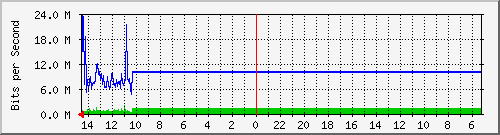

INTERNET AXTEL 100 MB PERISUR
| System: | FGT60D4613063461 in monitoreo |
| Maintainer: | |
| Description: | No-Description |
| ifType: | ethernetCsmacd (6) |
| ifName: | wan2 |
| Max Speed: | 125.0 MBytes/s |
| Ip: | 189.208.102.125 (189.208.102.125.int.dedicado.static.axtel.net) |
Estadísticas actualizadas el Jueves 21 de Julio de 2022 a las 14:35,
'FGT60D4613063461' ha estado funcionando durante 119 days, 14:07:54.
Gráfico diario (5 minutos : Promedio)

|
Máx |
Promedio |
Actual |
| Entrante: |
1973.0 kb/s (0.2%) |
1223.2 kb/s (0.1%) |
524.4 kb/s (0.1%) |
| Saliente: |
23.7 Mb/s (2.4%) |
9712.7 kb/s (1.0%) |
5950.1 kb/s (0.6%) |
Gráfico semanal (30 minutos : Promedio)
|
Máx |
Promedio |
Actual |
| Entrante: |
1286.3 kb/s (0.1%) |
1277.5 kb/s (0.1%) |
833.3 kb/s (0.1%) |
| Saliente: |
10.2 Mb/s (1.0%) |
9828.5 kb/s (1.0%) |
7118.7 kb/s (0.7%) |
Gráfico mensual (2 horas : Promedio)
|
Máx |
Promedio |
Actual |
| Entrante: |
1286.3 kb/s (0.1%) |
1284.7 kb/s (0.1%) |
768.8 kb/s (0.1%) |
| Saliente: |
9862.7 kb/s (1.0%) |
9856.0 kb/s (1.0%) |
7468.9 kb/s (0.7%) |
Gráfico anual (1 día : Promedio)
|
Máx |
Promedio |
Actual |
| Entrante: |
9173.5 kb/s (0.9%) |
2103.8 kb/s (0.2%) |
1286.3 kb/s (0.1%) |
| Saliente: |
24.4 Mb/s (2.4%) |
9563.1 kb/s (1.0%) |
9862.7 kb/s (1.0%) |
| VERDE ### |
Tráfico entrante en Bits por segundo |
| AZUL ### |
Saliente:going Traffic in Bits per Second |